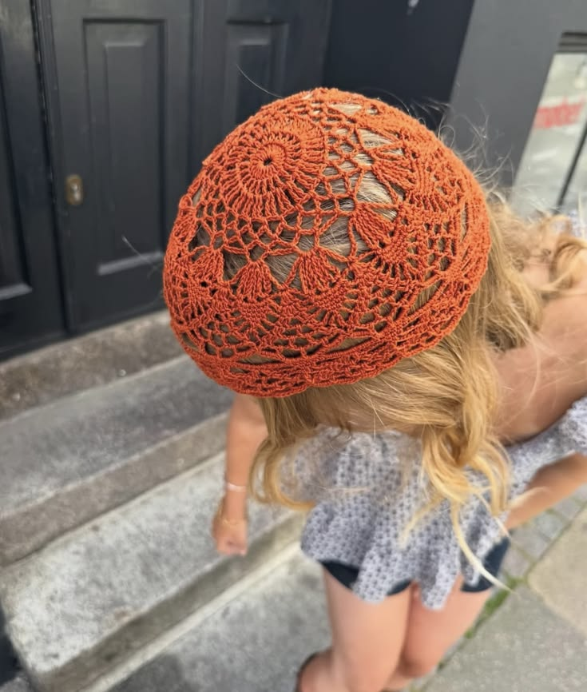
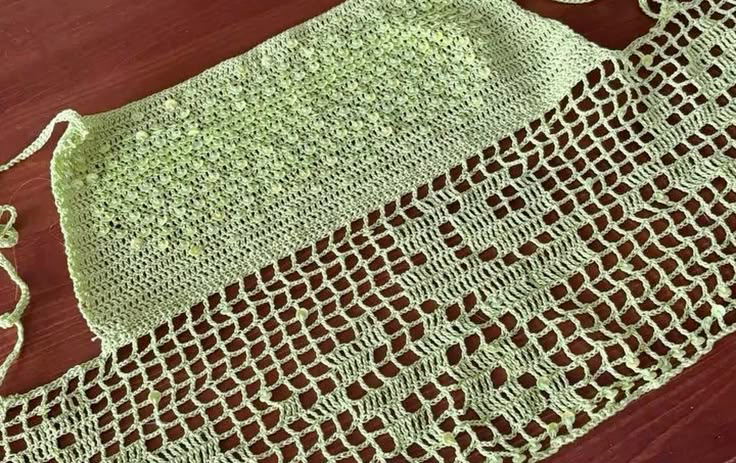
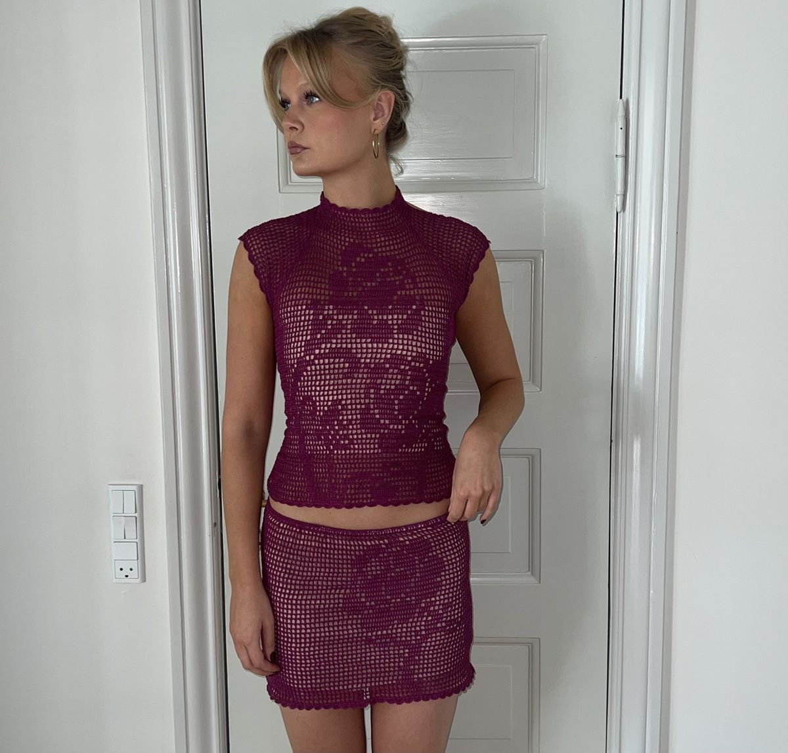
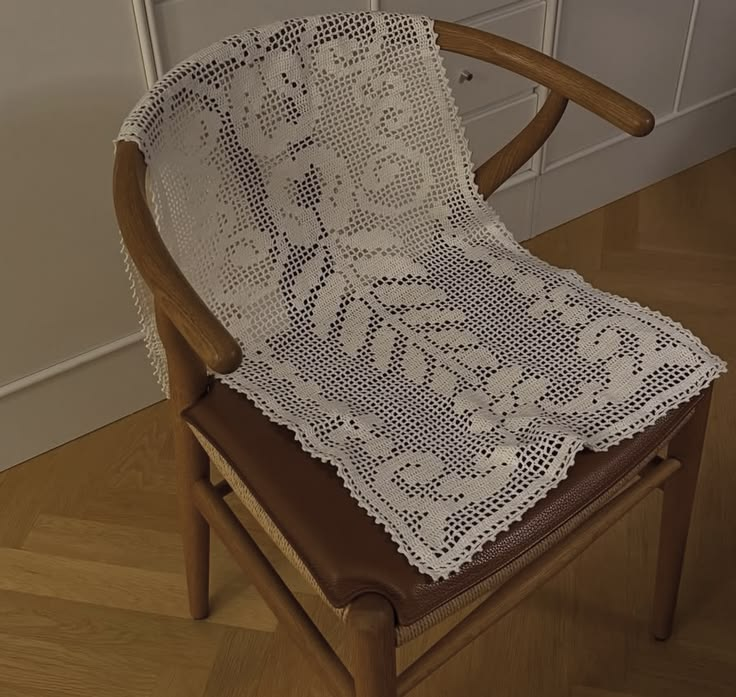

Your New Favorite Crochet Artist...
Filet crochet—a technique once associated with heirloom table runners and antique lace—is experiencing a major revival, and Crochet by BellaDonna is at the center of it. Through carefully crafted designs that blend nostalgia with modern styling, BellaDonna has transformed the traditional crochet method into a contemporary art form that feels both timeless and fresh. Her work has quickly captured attention across creative communities for its delicate balance of precision, texture, and personality.
What makes BellaDonna’s work stand out is her ability to modernize filet crochet without losing the integrity of the craft itself. Rather than relying solely on classic floral grids and vintage-inspired layouts, she experiments with bold imagery, statement lettering, and fashion-forward silhouettes. Her pieces feel intentional and artistic — proof that filet crochet can exist far beyond traditional décor and become wearable, display-worthy art.

Part of BellaDonna’s growing influence comes from the current shift toward slow-made, handcrafted design. As audiences become more interested in sustainable fashion and meaningful creative processes, crochet artists are finding renewed appreciation online. BellaDonna’s work reflects this movement perfectly. Each piece showcases the patience and technical detail that filet crochet demands, while still feeling approachable and visually current to younger audiences discovering the craft for the first time.
Social media has also played a major role in the resurgence of filet crochet, and BellaDonna understands how to present the medium in a visually compelling way. Styled photography, neutral palettes, layered textures, and behind-the-scenes process clips have helped introduce intricate crochet techniques to a wider audience. Her ability to merge craftsmanship with modern visual storytelling has made her work especially appealing within contemporary art and design spaces.

As crochet continues evolving from hobby to highly respected creative discipline, artists like BellaDonna are helping shape its future. By pushing filet crochet into new territory while honoring its traditional roots, she represents a new generation of fiber artists redefining what handmade art can look like today. Whether through fashion, wall art, or experimental patterns, BellaDonna is proving that filet crochet is no longer simply returning — it is becoming one of the defining creative trends of the moment.
